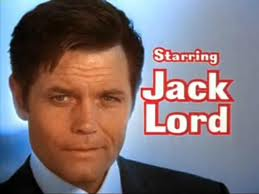
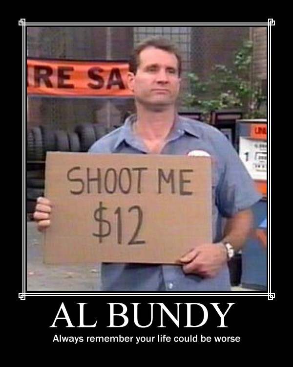
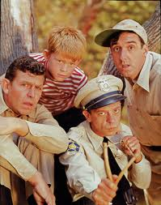

Martin Manley: My Life and Death
Born 8-15-53, Died 8-15-13 , Age 60
- Home Page
- January 1, 2012
- June 11, 2012
- Suicide Preface
- Why Suicide?
- Why not?
- Why Age 60?
- Self-Serving?
- Suicide - How 2
- Gun Control
- Other Suicides
- Other Quotes
- ------------------------------------
- Growing Up
- OMG: I look 60!
- Mom and Dad
- The Heavens
- My Religion
- Chancel Choir
- Victory O Lord
- The Proposal
- Two Marriages
- First Two Loves
- Pictures
- Trips and Travel
- Writing Fiction
- Music & Poetry
- Movies & TV
- Health
- Sleep Deprived
- Living Donor
- Food & Drink
- Creations
- Sports
- KC Star
- KC Tornado
- My IQ
- Synesthesia
- Poker
- Legal
- JOCO, Ks.
- U.S. Financial
- 911 & Conspiracies
- COOL STUFF
- Births & Deaths
Movies & TV
I’ve always enjoyed movies – who doesn’t? However, my interest in them probably exceeds the vast majority of people – or at least at one time it did.
In the early 1980’s I was part-owner of a Satellite TV company. The beauty of STV at the time was that you could get everything for free – including an unlimited number of movies. This was before broadcasters such as HBO and Cinemax and Showtime started scrambling their signals so that only cable companies could get the picture.
For several years, however, movies were free and I didn’t have any hobbies so it made sense that I start taping movies. At the time, VCRs were fairly new. I bought two Sony VCRs from Sears and used them to record movies.
Also, in those days almost all VCR tapes were two hours long if you taped in slow play – meaning best quality. If you taped in extended play, you could get six hours. The quality wasn't much different, so as a rule, I would record three movies to a tape. Eventually, I had over 300 tapes and over 1,000 movies. I was also not satisfied with simply having them in drawers of tapes, so I decided to log them into a data base on my computer.
In the mid 80's, computers were fairly uncommon for most individuals. However, I had owned a computer since 1981 and actually did my first three books on a home computer with specialized software. That was in the mid-late 1980’s. I had the ability to put movies into a data base on computer, but I didn’t have the software I needed.
I had taken computer courses, but this needed to be done in a language I did not know how to use. I hired a friend of mine (Doug) to make customized software so that I had all 1,000+ movies on my computer. When he finished and I entered all the data, it was possible to sort alphabetically or by my rating (1-10) or by the rating of the movie (G, PG, PG-13, R) or by the year it was made or by the tape# I had assigned to it or by one of several types of categories that I applied to the movie – such as Sci-Fi or Comedy or Thriller or whatever.
For a home movie collection in the 1980’s, this was very advanced. I don’t know anyone else who had such a collection in conjunction with a computerized system for keeping track of it. You can see I was pretty serious about movies.
When I moved from Topeka to Overland Park, Kansas in 1998 and then dated and married Teri, I eventually realized there just wasn’t enough room for all my movies. So, I packed them up and shipped them to my brother Mike in El Paso, Texas. Hopefully, he made some use of them, but it wasn’t long before the idea of having a thousand movies in your house on VHS was an archaic idea. Today, you either watch them via a movie channel or pay-per-view or Netflix/Blockbuster/Red Box or you watch them on your flat screen monitor or your laptop or your tablet or PDA or whatever. Everyone's "collection" is now every movie! Besides, one thing is for sure… if you are watching it at home on a TV, you aren’t likely to be watching a video tape. Nowadays, you expect everything to be high-definition and most people have flat screen TVs that measure 40” or more.
I like the idea of going to a movie, but frankly, if it weren’t for others to go with, I would never go. The home experience is vastly superior in my opinion. You can stop and start it for whatever reason you want. You don’t pay a ton for tickets or drinks or food. You don’t have to worry about comfort or other movie-goers being a pest. Now that quality and size of televisions has evolved to the point that it has, there simply isn’t a reason to go out – unless you just want to go out for the sake of going out or unless you feel you have to stay current to discuss the latest movie around the water cooler on Monday morning.
Of course, you could say the same thing with respect to restaurants or sporting events or lots of other things, but people still do it. Being single for so long (since 2004), I drifted away from going out a lot – although I still went every so often, mostly with my ex-wife Teri. But, I would have been just as content to eat in and watch a movie at home.
--------------------------------
My all-time favorite film is Little Shop of Horrors (1986). There are many reasons why. It’s funny, it’s clever, it’s got great music and it can’t be squeezed into a particular genre... it's wierd! There is no accounting for taste and there probably aren’t a thousand people in the world that would list it as their all-time favorite movie. But, I’m one of them.
My second favorite movie is Field of Dreams (1989). I discuss this in some detail in the category called “Writing Fiction” which you can click on the left. I wrote a short story which takes place just after Field of Dreams ended.
I’ve only given 21 movies a “10” rating in my life. As you know from what I’ve written, I’ve seen a lot of movies - thousands. But, I reserved a top rating for the absolute best of the best – those which, when watched, were ones that I would say had zero flaws. But, that wasn’t the only criteria. I also needed to really enjoy the story and the genre. If it met all those standards, then I might give it a 10.
The other thing about rating movies is that they are time sensitive. If I were to see "Airplane" today for the first time, I doubt seriously if I would give it a 10. The reason is because the humor in 1980 was cutting edge and completely unexpected. Nobody had done anything like that before. Today, it’s old hat. So, as you peruse my “10” ratings, keep that in mind.
1) Little Shop of Horrors (1986)
2) Field of Dreams (1989)
3) When Harry Met Sally (1989)
4) A Few Good Men (1992)
5) Animal House (1978)
6) Jack Reacher (2013)
7) Trading Places (1983)
8) Searching for Bobby Fisher (1993)
9) Airplane (1980)
10) The American President (1995)
11) The China Syndrome (1979)
12) 12 Angry Men, (1997)
13) Miracle (2004)
14) Wall Street (1987)
15) Fiddler on the Roof (1971)
16) Body Heat (1981)
17) The Godfather, Part II (1974)
18) Moneyball (2011)
19) Guess Who’s Coming to Dinner (1967)
20) Patton (1970)
21) Fahrenheit 9/11 (2004)
Honorable mention to Fracture (2007) which I just recently saw. It's brilliant!
If you care to read my reviews of quite a few movies on IMDB, here is the link.
I don't spend much time on Television. I pretty much quit watching network TV except for reality programs - such as Survivor and American Idol. And, practically everything I watched on the rest of the channels (cable) were reality programs - many of which can be found on the best channel on television (including ESPN) - The History Channel.

My all-time favorite dramas:
1) Hawaii Five-O - the original (1968-80).
2) Dallas (1978-91)
3) LA Law (1986-94)
4) Rockford Files (1974-80)
--- Favorite characters - Steve McGarret (H5O), Commander Data (Star Trek TNG)
I haven't watched a television drama in 20 years except for Star Trek TNG and Star Trek Voyager.


--- Favorite characters - Barney Fife (TAGS), Al Bundy (MWC)
My all-time favorite comedies:
1) The Andy Griffith Show (1960-68)
2) Married With Children (1987-97)
3) Frasier (1993-04)
4) King of Queens (1998-07)
Copyright 2013 Martin Manley Life and Death. All rights reserved.